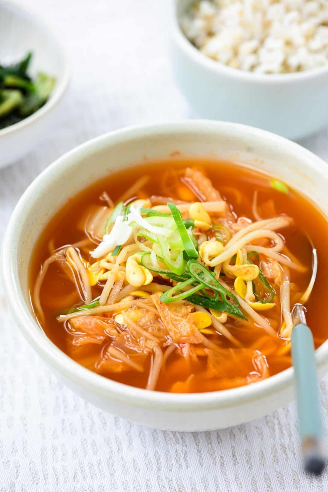

Kimchi Soup

Description
This recipe creates a mouth watering kimchi soup that even a Korean mom would savor.
Ingredients
- 2 cups of chopped kimchi
- 1/2 pound of pork shoulder, cut into bite sized pieces
- 2 tablespoons of gochujang
- 1 teaspoon of brown sugar
- 5 cups of water
- 2 tablespoons of chicken better than bouillon
- 2 stalks of green onions, chopped
- 1 package of soft of medium-firm tofu
Steps
- Combine the kimchi, better than bouillon, hot pepper paste, kimchi juice, pork, and sugar in a heavy bottomed pot.
- Add water and bring to a boil over hight heat and cook for 30 minutes.
- Add tofu and lower the heat to medium low. Cook for another 10 minutes.
- Add green onion and remove from the heat.
- Serve hot with rice and a few more side dishes if desired.